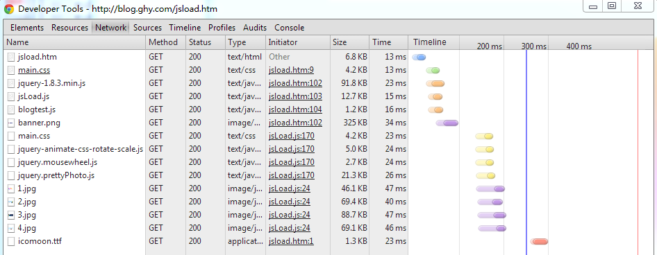
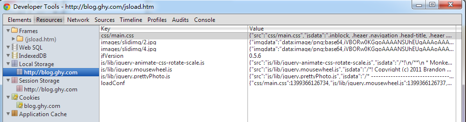
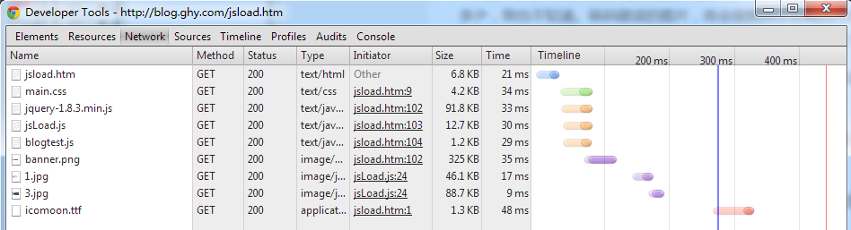

js文件 css文件，图片，本地存储
你肯定想过，把一些基础的js文件或者图片存储在用户浏览器上，减少页面加载的时间，提高网页响应速度
你也可能试过，html5里面的缓存 manifest 之类的。试过的人最终都没有用
html5 缓存
这种技术从html一出来就有了，但是弊端非常的明显.缓存的配置文件可以缓存住你想要的缓存住的静态文件，和不缓存的文件.但是一个网页本身他是默认缓存的，也就是说，当你配置文件没有任何更改的时候，你的网页默认是不刷新的!!!做一个已经发布的游戏页面，不需要时时更新页面内容，这种方案非常好，但是一个动态主页需要时时更新主页内容的网站，一旦用这种东西，简直不能忍。
写这个插件之前，尝试过很多做法，都不能解决缓存住页面本身这个问题。如果有哪位哥解决了这个问题，可以联系小弟，不胜感激。
本地存储 实现
1:引用文件
< script type="text/javascript" src="js/jquery-1.8.3.min.js">< /script>
< script type="text/javascript" src="js/2014/jsLoad.js">< /script>
< script type="text/javascript">
jsLoad.checkconf();
var imgarray=[
"images/bigimg/14093064301_7b99b368e3_c.jpg",
"images/banner.png",
"images/2014/console-log.jpg",
"images/bigimg/14118907873_7bca958fdf_k.jpg",
"images/bigimg/14097745451_d29f5de937_h.jpg"
]
var cssarry=[
"css/main.css"
]
var jsarry=[
"js/lib/jquery-animate-css-rotate-scale.js",
"js/lib/jquery.mousewheel",
"js/lib/jquery.prettyPhoto"
]
jsLoad.loadCss(cssarry,function(i){
})
jsLoad.loadJs(jsarry,function(i){
})
jsLoad.loadImg(imgarray,function(i){
alert("图片加载完成")
})
< /script>
几点说明
1：存储时间默认为一天，如果想更新某一个js文件，在js文件路径后面添加一个任意随机参数就行了
2：图片存储有限制，最大图片最好不要超过100k,转码后超过250k将不被存储（为了保证页面不粗错），100k的图片能转多少，我也不知道。转码错误的图片，将会按照异步加载的方式重新加载。图少而大这种情况就不要用这个加载了，因为本地存储空间有限，ie8为38k，转码也存在问题。所以可以将这个图片加载看作是一个异步加载的工具函数
3：含有背景图片的css也不建议用这种方式加载，虽然经过测试css加载速度提升很多，但是体验不好，最开始背景图片没有出来，而是等css加载好后，背景图片才出来。
4：说了那么多限制，没有点好处吗？以下情况可以采用，js量多而大，大部分是不会更改的一些类库。图片多，打算用异步加载，加载在完成后才出现页面
5：写到这儿感觉有点伤，这玩样儿很难用到项目中去，没有适合的场景。js单线程效率限制太大了。现在前端的限制也不在加载速度这一块，这个插件就当是一种学习。
chrome F12 可以查看调试日志，第二次刷新后图片是从本地读取，速度会快一点。调试截图见下面
测试图片 本地
 
第一次从服务器加载（由于是本地服务器所以比较快）,第一次加载后刷新页面 已经存储在本地的js 图片和css文件 已经不再请求网络，有些图片还要重新请求，因为图片过大，不宜存储

下面图片就是测试中使用的图片